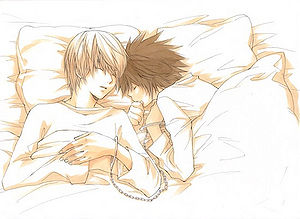

Vagabundo
 De: La Frikipedia, la enciclopedia extremadamente seria.
De: La Frikipedia, la enciclopedia extremadamente seria.
| De la serie tribus urbanas del mundo:
|
| Vagabundo
|
Ejemplo de la tribu
|
| Dame tus dineeeros
|
|
| Hábitat
|
las puertas del mercadona, el portal de IP anónima
|
| Inteligencia
|
media (pero solo por la noche)
|
| Frase favorita
|
...o te rajo
|
| ¿Peligroso?
|
solo por el turno de noche
|
| Obsesión
|
conseguir leros para gastárselo en nieve
|
| Notas
|
su canción favorita es baby Pedro Navaja, matón de esquina
|
<<La vida se resume en dos palabras, dineros y carteles de cartón>>
-Cualquier vagabundo andaluz sobre la vida
Dícese de ese que te pide leros en la puerta del Maradona, y del que te encuentras en el portal de tu casa cada mañana que sales hacia la casa del paro. Se dedican principalmente a dejarse la barba como el señor de los anillos, perseguirte por la calle hasta el barrio prohibido y comparar navajas. De noche, practican en arte del sexo robo sorpresa y el lanzamiento de cuchillo. Han existido desde siempre. Bueno, mejor dicho, desde que existió la primera calle de cualquier barrio.
 el trabajo ideal de cualquier vagabundo
Antecedentes
Normalmente son unos vagos sin ánimo de trabajar, pero con mucho carácter. El jefe, al ver que no le dan palo al agua, los despide. Esto crea un agujero negro cerebral que les obliga a que les crezca barba canosa, se les caigan dientes e incluso que les salgan rovellones en la nariz. Los muy ilustrados queman su casa de alquiler y se van con lo que llevan puesto, en vez de comprarse una maleta (ni que sea de los chinos) y llevarse al menos la ropa.
Otras veces se trata de herencia: Si no la hay para los padres, menos para los hijos. Estos están mas acostumbrados a vivir por las calles y soportar las duras represalias de la bofia. Estos también saben jugar muy bien al deporte de masas, y aveces acaban siendo tales jugadores como los del Farsa o el Real Mandril, véase Lionel Messi o cosas por el estilo. Otras veces, te los encuentras por la calle después de una fiesta, porai las 2:30-3:00 del madrugón. Los científicos no saben si este hecho ocurre por si son Batman o si es porque les gusta mucho madrugar. El caso, que a estos no se les hace un agujero negro cerebral, que ya viene en su sistema de protección (así como el avast pero en pirata), sino que debido a las ondas que producen las aleaciones de sus navajas con la tele del tío que se está a punto de suicidar desde el 10º piso, les entra un lapsus de la coca-ína y empiezan a matar gente de esquina porque sí.
Vida diaria
La vida de un vagabundo cualquiera:

La cara de cualquiera de la tribu al despertar
- Se levanta con
el sol las primeras horas de intenso tráfico bajo el puente, comprueba que ningún listillo le haya robado mientras duerme y parte hacia las puertas de cualquier banco (aunque normalmente son los de bankia, para hacer competencia y esas cosas).
- Tras escapar de la policía por no quererle enseñar su DNI, se va al bar a por un vodka o superiores.
- Después de ese almuerzo, se dirige a las puertas del mercadona para luego perseguir a la gente diciéndole que les de algo de su compra
mierdosa de hacendaño y algunos leros.
- Más o menos a la hora de comer (varia según las zonas), abre sus chips que ha logrado desde las 11:00 hasta las XX:XX, y a la que se va a comer una, pasa un ciudadano cualquiera y se las tira al suelo. A esto, el vagabundo responde de forma muy agresiva, y se tira sobre el ciudadano hasta que clava la navaja en el cuello o hasta que llegue la policía (varía según en que barrio esté). Luego, acaba de comerse sus preciadas chips.
- Tras terminar su turno del mercadona, se va a su guarida supersecreta (la esquina de la calleja) y esconde allí sus pertenencias, aunque a la mañana siguiente ya no están porque los chulos de los canis lo quieren fundir y hacerse cadenas inútiles con las que conseguir mas hembras, o al menos parecer más idiotas
- Emieza el turno de noche: cualquier incauto (IP anónima) que pase por su dominio desde las 11:00 hasta las 6:00 sufrirá la ira de ser chantajeado a dar todo lo que lleve encima, porque sino, le raja como al pobre ciudadano que le tiró las chips, y además se queda con todas sus pertenencias, así que más te vale no ir de fiesta si tu casa está en el rango de cualquier vagabundo
- Ahora le tocaría despertarse, pero como ha hecho turno nocturno (hala, si hasta rima! Lo pondré en mi "reappersong"), se va a dormir a tu portal en vez de en el puente, que ahí ya durmió ayer.
Tipos de vagabundos
Este seria una aleación del fumador-vacilón-lión-pocos amigos
- Vagabundo sumiso:Este se caracteriza por el simple hecho que de si le das lo que quiere, hace los que quieras, excepto devoluciones
- Vagabundo vacilón:Se caracteriza por decirte a la mínima que te va a rajar a menos que le des tus leros. Normalmente aparecen de noche, aunque a veces te sorprenden por algún callejón oscuro
- Vagabundo fumador:Acostumbra a llevar un cigarro por la boca, y si no, algo más grande. También usan su adicción para encender hogueras, aunque todavía se desconoce como las mantienen encendidas con la lluvia.
- Vagabundo pocos amigos:Este es el típico que la lía parda por no querer enseñar el DNI ante la pasma, el que luego sale por la tele tirando piedras a la cámara. Es muy corriente en ciudades grandes como Teruel o Almería.
- vagabundo lión:Este también suele aparecer por la tele, más a menudo en manifestaciones inpacíficas, tirándole sus botellas vacías y rotas a la pasma, o bien huyendo de ella. Es el que menos leros gana, ya que está muy poco tiempo delante de las puertas de cualquier súper.
| Tribus Urbanas
|
 Universales Universales
 Españolas Españolas
 Argentinas Argentinas
 Chilenas Chilenas
 Colombianas Colombianas
 Mexicanas Mexicanas
 Peruanas Peruanas
 Venezolanas Venezolanas
|
Frikipedia 2005-2016, Licencia
GFDL 1.2 - Extraído por FrikiLeaks